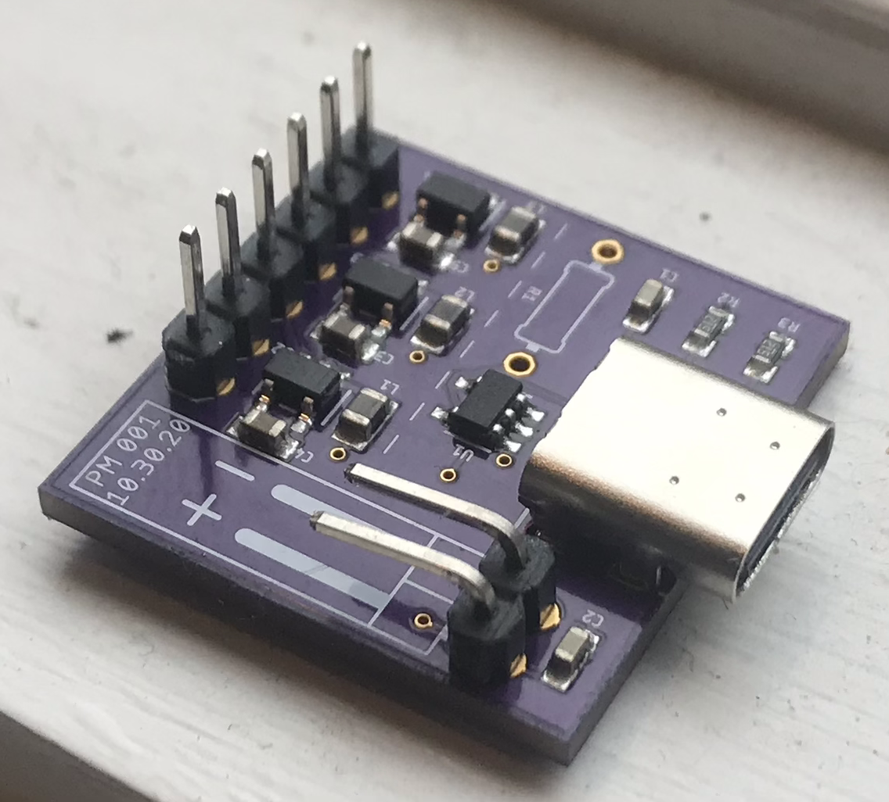
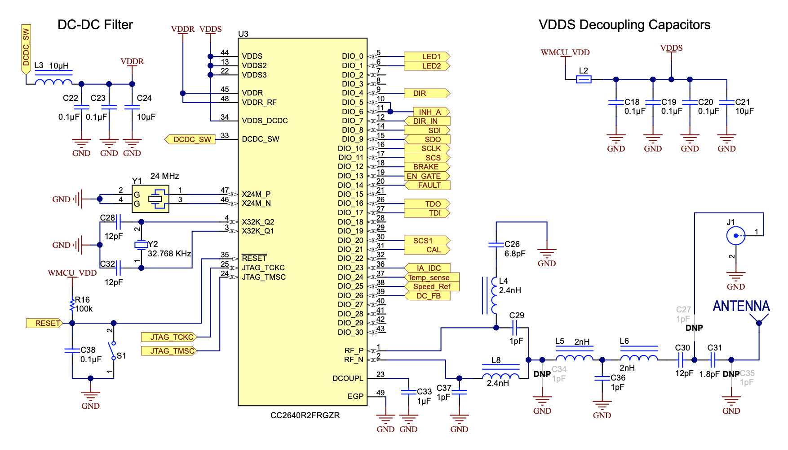
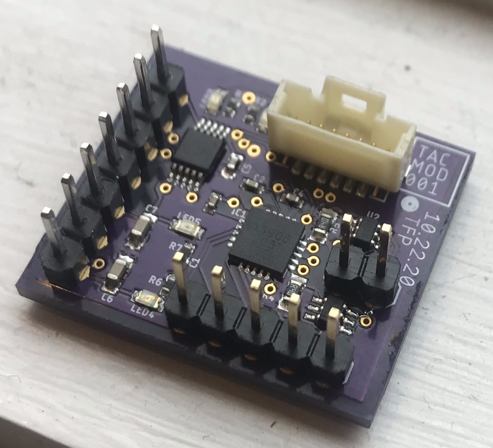
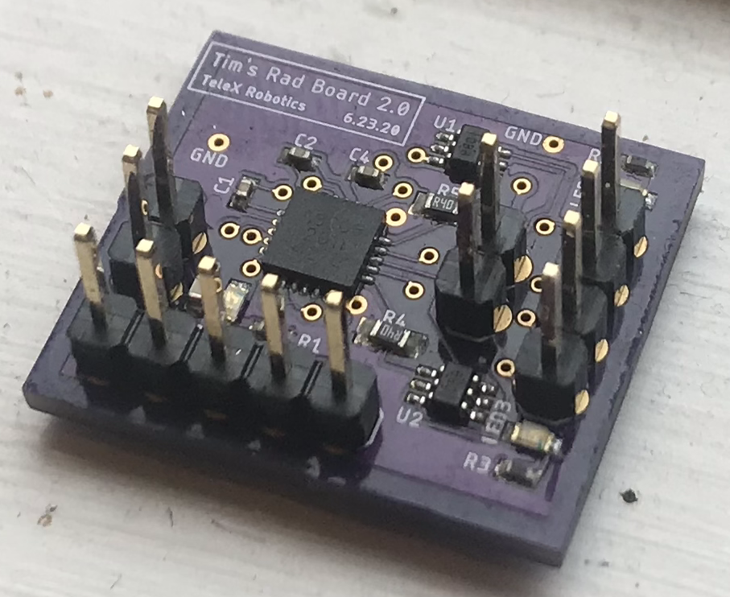
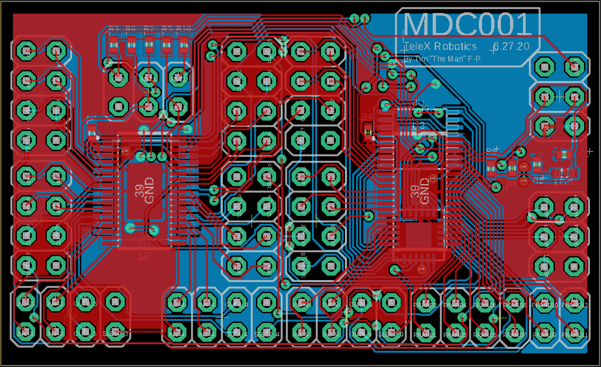

We've organized the embedded electronics according to the logical topology shown below.

A populated PM board, version 001.
Power Management
This module has two functions: 1) receive power from the wall and use it to charge the on-board battery, and 2) buck / boost the battery voltage to the various voltage levels required by the other modules. Additionally, this module is responsible for monitoring the temperature of the battery, the current discharge through the system, and the battery voltage, all of which helps to prevent catastrophic brown-outs and meltdowns. All of these things are really monitored by the microcontroller though, since the PM board isn't capable of digital processing on its own.
Brain Board

Schematic for one of the microcontrollers on the brain board.
This is the heart — or rather, the brain — of the TeleX glove. It's responsible for communicating with the host computer / VR headset over BLE, and for running the entire embedded control stack. It comprises a couple of microcontrollers and their supporting infrastructure, which includes some external oscillators, an over-voltage protection circuit, a JTAG programming interface, and an RF antenna circuit. The primary microcontroller runs an RTOS, which serves to manage the memory and power consumption of all the connected modules. The tactile module and the force feedback module (MDC) are entirely independant and are capable of entering a low-power mode, meaning they can be independantly shut off at the user's discretion to prolong battery life.

A populated TAC-MOD board, version 001. See if you can spot the mistake!
Tactile Module Driver
This module is responsible for driving the tactile feedback unit, which mounts on the user's finger to provide tactile stimulus in two forms: skin-stretch and vibration. For more information on how the tactile module works from a mechanical standpoint, check out its designated page under the "How it works" section of this website. The 20-QFN IC on the board is an A3906 which drives the two DC motors that provide skin-stretch feedback. The 10-VSSOP IC is a DRV2605L which drives a linear resonant actuator mounted on the underside of the tactile module. All the LEDs on the board are just for fun, and probably won't make their way to the final embedded board.
Sensor Data Acquisition
No picture associated with this one...yet. This circuit is responsible for reading all of the sensors on the glove and forwarding that data to the brain board in a convenient format. There are two main categories of sensors that are used in the glove: those that measure joint angle values, and thus serve the hand-tracking functionality of the glove; and those that serve to close the control loops on the various motors employed in the force- and tactile-feedback modules.

A populated motor driver board, version 002.
Motor Driver
As far as embedded modules go, this one is about as low-level as it gets. Used to drive DC motors, this board lives one step removed from the mechanics of the glove. It is capable of converting digital signals into appropriate drive voltages for up to two brushed motors and for monitoring the current drawn by each motor. Additionally, it has a low-power mode which enables the glove to save power any time the motors aren't actively being driven. The heart of this module is an A3906 IC, the 20-QFN chip shown in the picture to the left.
Tactile Module Driver

Board layout for the MDC, version 001.
This board sits between the brain board and all the motor drivers. If we had fewer motor drivers, the brain board could communicate with them directly. Unfortunately, that is not the case, and we need a whole circuit devoted to being a glorified multiplexer — a mid-level manager, for all you non-tech people out there — managing communication between the motor drivers and their boss. Well, it also has some nice power management features, so perhaps this board deserves more credit than I'm currently giving it.
Vision System
This module stands almost entirely independant from the rest of the embedded system. Aside from using the brain board as a pass-through data transfer system with the host, it contains its own microprocessor, driver chips, and power management circuitry. This is one of the few modules on the glove that contains some "secret sauce," meaning we unfortunately can't give out much information about it.